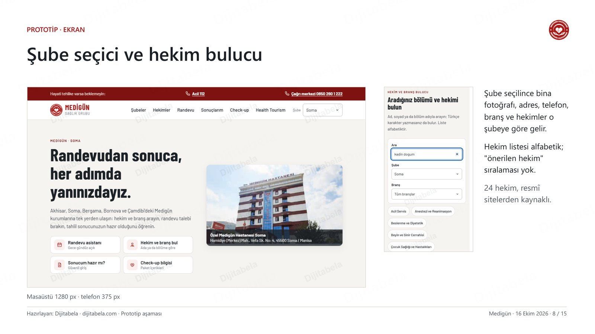
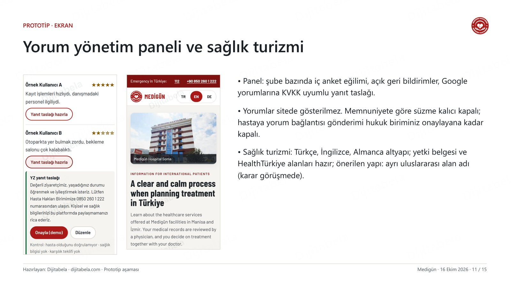
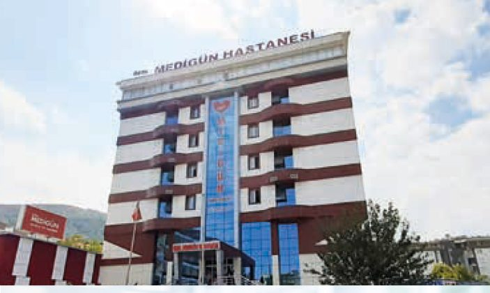

Medigün Sağlık Grubu · 16 Ekim 2026
Randevudan sonuca, her adımda yanınızda
Medigün için hazırladığımız dijital hasta deneyimi altyapısını iki dakikada anlatan video, sunumun tamamı ve telefonunuzdan deneyebileceğiniz canlı prototip bu sayfada.
Altyazılı. Dikey (telefon) sürümü: 9:16 videoyu indir.
Canlı prototip
Telefonunuzdan deneyin
Prototipteki şube ve hekim bilgileri Medigün'ün resmî sitelerinden alınmıştır; demolardaki sayılar örnek veridir.

Hasta sitesi
Şube seçici, hekim ve branş bulucu, randevu asistanı, sonuç bildirimi, check-up.
Prototipi aç
Yönetim paneli
İç anket eğilimi, geri bildirimler, Google yorumlarına uygun yanıt taslağı.
Paneli aç
Sağlık turizmi
Türkçe, İngilizce ve Almanca bilgilendirme altyapısı.
Sayfayı aç
Teknik altyapı
Altı parçalı sistem
- Site altyapısıTek alan adında 5 kurum; şube seçilince adres, telefon, branş ve hekimler değişir.
- Hekim ve branş bulucuKurumun verdiği kadro listesinden; arama ve filtre.
- Randevu asistanı altyapısıGece gündüz; MHRS ya da özel randevu talebi; acil durumda 112.
- Sonuç bildirimi entegrasyonu"Sonucunuz hazır" bildirimi ve güvenli giriş; mesajda sağlık bilgisi yok.
- Yorum yönetim paneliGoogle yorumlarını izleme, KVKK uyumlu yanıt taslağı, iç anket.
- ÖlçümSite hızı, randevu talebi ve bildirim teslimi için aylık teknik rapor.
Sağlık bilgilendirme metinlerini Medigün'ün yetkili hekimleri hazırlar ve onaylar; biz teknik altyapıyı kurarız.
İletişim
Alim Hoşlar · Dijitabela
Sorularınız ve görüşme için bize yazabilirsiniz.